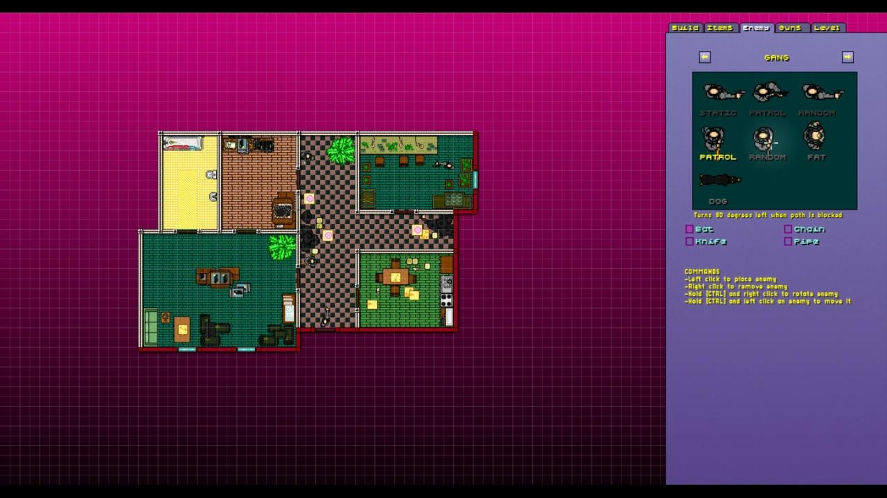

Игровой процесс во многом похож на первую часть, но в отличие от неё в Wrong Number появились уровни сложности (классический и сложный), сложный уровень открывается после прохождения игры на классической сложности. На нём все уровни перевёрнуты и также имеют незначительные изменения,в некоторых деталях как экран заставки уровня он изменён, немного меняется цветовая палитра, на них появляются более серьёзные противники, а фиксацию на цели нельзя использовать.
В игре появилось 13 управляемых персонажей. У каждого из них собственное видение истории, как у Джекета и Байкера в оригинальной игре. Маски из первой части снова появились в игре, а также добавлены новые маски, дающие новые способности. Каждый персонаж имеет особые способности: Кори может делать перекаты под вражеским огнём, у Марка есть два пистолета-пулемёта, которыми он может стрелять в разные стороны, разводя руки, Алекс и Эш используют бензопилу и пистолет соответственно, Тони не использует оружие, но его удары летальны.

Анонсированный с выходом игры редактор уровней вышел осенью 2015 года.
Системные требования:
МИНИМАЛЬНЫЕ:
ОС: Microsoft® Windows® XP / Vista / 7
Процессор: с тактовой частотой 1.2 ГГц
Оперативная память: 1 ГБ
Видеокарта: с 32 МБ видеопамяти, совместимая с DirectX 8
DirectX®: 9.0c
Жесткий диск: 600 МБ свободного места
Дополнительно: контроллер Microsoft Xbox 360 или контроллер, совместимый с Direct Input
РЕКОМЕНДУЕМЫЕ:
ОС: Microsoft® Windows® XP / Vista / 7
Процессор: с тактовой частотой 1.4 ГГц или лучше
Оперативная память: 2 ГБ
Видеокарта: с 32 МБ видеопамяти, совместимая с DirectX 8
DirectX®: 9.0c
Жесткий диск: 600 МБ свободного места
Дополнительно: контроллер Microsoft Xbox 360 или контроллер, совместимый с Direct Input